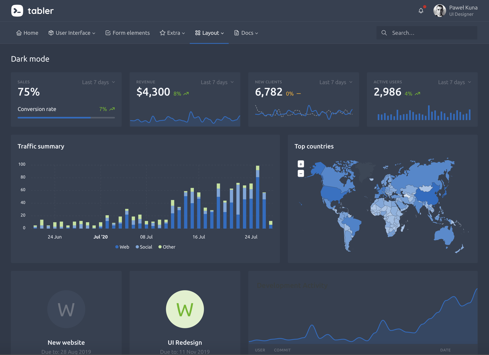

16 Template selection
There are numerous HTML templates all over the web. However, few may be suitable for shiny, for reasons mentioned in Chapter 3:
- shiny is built on top of Bootstrap 3 (HTML, CSS and Javascript framework), and changing the framework will not be a trivial endeavor. However, shinymaterial and shiny.semantic are good examples that show this is possible.
- shiny relies on jQuery. Consequently, all templates based upon React, Vue and other Javascript framework will not be natively supported. Again, there exist some examples for React with shiny and more generally, the reactR package developed by Kent Russell and Alan Dipert. Chapter 28 provides a general overview.
The web provides a myriad of relevant open source HTML templates like Colorlib and Creative Tim. Many of the RinteRface packages are actually built on top of those resources.
In the next chapter, we will focus on the pretty tabler.io dashboard template, whose overview may be seen on Figure 16.1).

FIGURE 16.1: Tabler dashboard overview